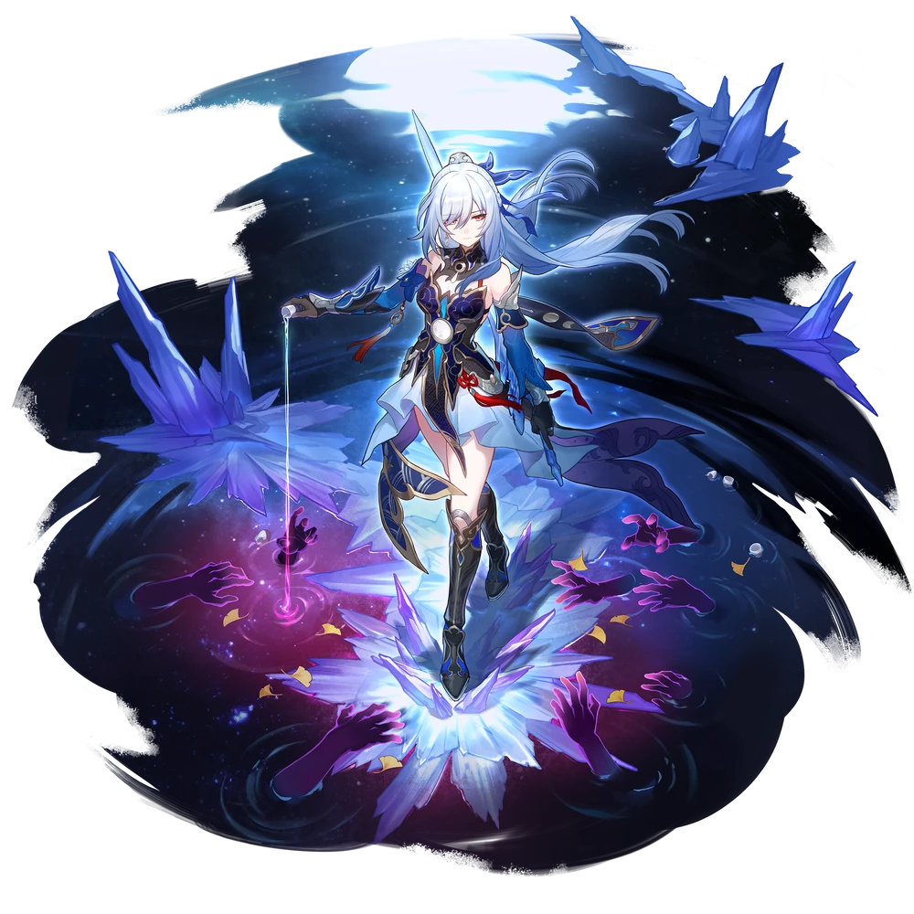
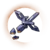

| Nome | Jingliu |
|---|---|
| Elemento | Gelo | Raridade | ✦ ✦ ✦ ✦ ✦ |
| Caminho | A Destruição |
| Sexo | Femea |
| Especie | Humana |
| Facção | O Xianzhou Luofu (no perfil)- O Xianzhou Cangcheng (antigo)- Quinteto High-Cloud (antigo) | Mundo | O Xianzhou Loufu O Xianzhou Cangcheng | Como obter | Delicado Eclipse da Lua | Data de Lançamento | 2023-10-11 | Adicionado pela primeira vez | Versão 1.0 Jingliu foi mencionado nas dublagens dos personagens. |
Ascensões e estatísticas
| Fase de Ascensão | Level | Base HP | Base ATK | Base DEF | Base SPD |
|---|---|---|---|---|---|
| 0✦ | 1/20 | 195 | 92 | 66 | 96 |
| 20/20 | 380 | 180 | 128 | 96 | |
| 1✦ | 20/30 | 459 | 217 | 155 | 96 |
| 30/30 | 556 | 263 | 188 | 96 | |
| 2✦ | 30/40 | 634 | 300 | 214 | 96 |
| 40/40 | 732 | 346 | 247 | 96 | |
| 3✦ | 40/50 | 810 | 383 | 273 | 96 |
| 50/50 | 908 | 429 | 306 | 96 | |
| 4✦ | 50/60 | 986 | 466 | 333 | 96 |
| 60/60 | 1,084 | 512 | 366 | 96 | |
| 5✦ | 60/70 | 1,162 | 549 | 392 | 96 |
| 70/70 | 1,260 | 595 | 425 | 96 | |
| 6✦ | 70/80 | 1,338 | 632 | 452 | 96 |
| 80/80 | 1,435 | 679 | 485 | 96 |
| Nível | Custo de Evolução | Materiais de Ascensão do Personagem | Materiais Necessários |
|---|---|---|---|
| 0 → 1 ✦ |  4,000 4,000 |
 5 5 |
|
| 1 → 2 ✦ | 8,000 |
10 |
|
| 2 → 3 ✦ | 16,000 |
3 |  6 6 |
| 3 → 4 ✦ | 40,000 |
7 | 9 |
| 4 → 5 ✦ | 80,000 |
20 |  6 6 |
| 5 → 6 ✦ | 160,000 |
35 | 9 |
Habilidades de combate
| Icone | Tipo | Nome | Descrição | Marcação | Energia | Resistência DMG |
|---|---|---|---|---|---|---|
| ATK básico | Lucente Lucente | Causa DMG de Gelo igual a 50% –110% do ATK de Jingliu a um único inimigo. | Alvo único | Geração: 20 | 30 | |
| Skill | Lua no rio glacial | Causa DMG de Gelo igual a 125% –275% do ATK de Jingliu a um único inimigo e causa DMG de Gelo igual a 62,5% –137,5% do ATK de Jingliu a inimigos adjacentes. Consome 1 pilha(s) de Syzygy. Usar esta habilidade não consome Skill Points. | Explosão | Geração: 30 | 60 (principal) 30 (adjacente) | |
| Skill | Flash Transcendente | Causa DMG de Gelo igual a 100% –220% do ATK de Jingliu a um único inimigo e obtém 1 pilha(s) de Syzygy. | Alvo único | Geração: 20 | 60 | |
| Ultimate | Dreamflux florefêmero | Causa DMG de Gelo igual a 180% –324% do ATK de Jingliu a um único inimigo e causa DMG de Gelo igual a 90% –162% do ATK de Jingliu a quaisquer inimigos adjacentes. Ganha 1 pilha(s) de Syzygy após o ataque terminar. | Explosão | Custo: 140 Geração: 5 | 60 | |
| Talento | Transmigração Crescente | Quando Jingliu tem 2 pilhas de Syzygy, ela entra no estado de Transmigração Espectral com sua Ação Avançada em 100% e sua Taxa CRIT aumenta em 40% –52% . Então, a habilidade "Flash Transcendente" de Jingliu é aprimorada e se transforma em "Moon On Glacial River" e se torna a única habilidade que ela pode usar em batalha. Quando Jingliu usa um ataque no estado de Transmigração Espectral, ela consome HP de todos os outros aliados igual a 4% de seus respectivos HP máximos (isso não pode reduzir o HP dos aliados para menos de 1). O ATK de Jingliu aumenta em 540% do total de HP consumido de todos os aliados neste ataque, limitado a 90% –198%de seu ATK base, durando até o ataque atual terminar. Jingliu não pode entrar no estado de Transmigração Espectral novamente até que o estado atual de Transmigração Espectral termine. Syzygy pode acumular até 3 vezes. Quando as pilhas de Syzygy chegarem a 0, Jingliu sairá do estado de Transmigração Espectral. | Melhorar | |||
| Técnica | Brilho da Verdade | Depois de usar esta técnica, cria uma dimensão ao redor de Jingliu que dura 20 segundos, e todos os inimigos nesta dimensão ficarão Congelados. Depois de entrar em combate com inimigos na dimensão, Jingliu regenera imediatamente 15 Energia e obtém 1 pilha(s) de Syzygy, com 100% de chance base de Congelar alvos inimigos por 1 turno(s). Enquanto Congelados, os alvos inimigos não podem agir e recebem DMG Adicional de Gelo igual a 80% do ATK de Jingliu no início de cada turno. Apenas 1 dimensão criada por aliados pode existir ao mesmo tempo. | Prejudicar |
Eidolons
| Icone | Nome da habilidade | Nivel | Descrição |
|---|---|---|---|
| Lua bate no Portão de Tianguan | 1 | Ao usar sua habilidade Ultimate ou Enhanced, o CRIT DMG de Jingliu aumenta em 24% por 1 turno(s). Se apenas um alvo inimigo for atacado, o alvo receberá adicionalmente DMG de Gelo igual a 100% do ATK de Jingliu. | |
| Dipper Qixing das Sombras Crescentes | 2 | Depois de usar Ultimate, aumenta o DMG da próxima habilidade aprimorada em 80%. | |
| Halfmoon Gapes Mercurial Haze | 3 | Nível final. +2, até um máximo de Nv. 15. Talento Nv. +2, até um máximo de Nv. 15. | |
| Lunarlance brilha em direção ao céu | 4 | Durante o estado de Transmigração Espectral, o ATK ganho ao consumir o HP dos aliados é adicionalmente aumentado em 90% do HP total consumido de toda a equipe. O limite de ATK ganho desta forma também aumenta em 30%. | |
 |
Sombras Noturnas Radiância Astral | 5 | Habilidade Nv. +2, até um máximo de Nv. 15. ATK Básico Nv. +1, até um máximo de Nv. 10. |
| Eclipse Hollows Casca Corporal | 6 | Quando Jingliu entra no estado de Transmigração Espectral, o limite de pilha de Syzygy aumenta em 1 e Jingliu obtém 1 pilha(s) de Syzygy. Enquanto ela está no estado de Transmigração Espectral, seu CRIT DMG aumenta em 50%. |
Traços
| Custo Total (1 → 6 para rastreamento de ATK básico) | ||||||
|---|---|---|---|---|---|---|
| 240.000 |
6 |
7 |
7 |
3 |  8 8 |
 11 11 |
| Custo total (1 → 10 para um rastreamento) | ||||||||
|---|---|---|---|---|---|---|---|---|
| 652.000 |
9 |
13 |
7 |
3 | 15 |
30 |
 3 3 |
 1 1 |